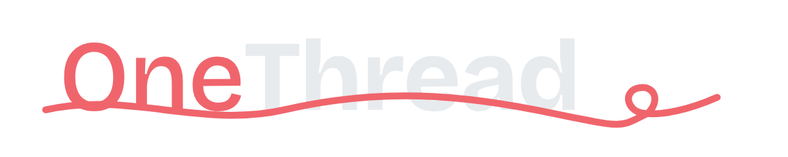

OneThread brand pack · version 1 · November 2026
One name, one red thread, and a promise short enough to say out loud.
OneThread is a care record held by the young person it is about. The brand has to do three things: be trusted by a paramedic who has never heard of it, feel like it belongs to a sixteen-year-old rather than to a hospital, and never look like an app that wants your data. Everything below follows from that.
The mark
The wordmark is the brand. "One" sits in thread red at medium weight; "Thread" in ink at bold. A single red thread runs beneath the baseline, stitched through the word, and ends in a small knot. The thread is the Red Book, the thing that joins the pieces, and the one line a young person holds. It is never decorative: it always runs under the whole word and always ends in the knot.






The symbol
For app icons, favicons and anywhere the wordmark is too small to read: a bold T with the thread passing through it, on a rounded square. Use the ink version by default; the red version only where an icon needs to stand out on a dark screen.


Clear space and size
- Leave clear space around the wordmark equal to the height of the capital T on every side.
- Never smaller than 24 mm wide in print or 120 px on screen; below that, use the symbol.
- Do not recolour, stretch, outline, add a shadow, rotate, or set the words in another typeface. Do not separate the thread from the word except as the thread motif described below.
The thread motif
The thread on its own (svg) may be used as a short rule under a heading, as on onethread.uk, and as a divider on paper. It is the only ornament the brand has. One per page is plenty.

Colour
A warm paper, a deep ink, and one red. The red is for the thread, the word "One", and the one thing on a page that must be seen. It is never a background for text, and it is never used to mean danger, because the record uses red for out-of-date lines; the brand red and the warning red share a family on purpose, and the context tells them apart.
#B9121B#1B2430#F5F4F0#5C6672#1F4E8C#F4EBDDDark backgrounds use ink #11161C, text #E8EBEE, and a lifted red #F0656C so the thread stays legible. Status colours on the record (amber for due, red for overdue, green for confirmed) are information, not brand, and are not used in marketing.
Type
Two typefaces, both free and open, both chosen for reading under stress.
All three are served from onethread.uk and included in the pack under their own open licences (SIL Open Font License). In Word or Google Docs, Arial and Georgia are acceptable stand-ins; do not substitute a typewriter face for the mono.
Voice
The tagline is the whole proposition and it is always written with the full stop. Everything else follows the same rules.
- Plain words, short sentences. Write the way a good nurse explains something at a bedside. If a sentence needs a comma to breathe, split it.
- The young person is the subject. "Sam decides who sees what." Not "users can configure permissions." The record is theirs; the professionals are visitors.
- Say what it is not. Not a new health record. Not an app that wants your data. Nobody's label. Stating the negatives is part of the trust.
- Specific, never clever. Numbers, names, dates. No puns on thread, no "weaving", no "tapestry". The metaphor is in the logo and nowhere else.
- Warm, not soft. The subject is children who have been hurt. Dignity over cheer. No exclamation marks.
- Names. OneThread, one word, capital O and T, in text. "Thread" alone is fine once OneThread has been said. Never "One Thread" with a space in running text (the registered word mark is ONE THREAD, which is a legal spelling, not a style).
Using it
Do
- Put the wordmark on paper or ink with clear space around it.
- Use the thread motif as a single rule under a heading.
- Use the social card and end card as they are for posts and the explainer video.
- Say "built in the open" and link to the source.
- Use the example record (Sam) when showing the product; it is invented and safe to show.
Don't
- Put the mark on photographs of children, hospitals or ambulances.
- Use stock imagery of any kind. If a picture is needed, use the record itself, the paper sheets, or the thread.
- Pair OneThread with the NHS logo or any public body's mark without written permission; the brand sits beside them, never inside them.
- Use the red for buttons that do ordinary things. One red thing per screen.
- Add gradients, shadows, glows or a second accent colour.
Video
For the explainer: open on paper, wordmark alone for two seconds, then the line "Every new adult asks the same questions." Close on the end card below, held for four seconds. Captions in Atkinson Hyperlegible, ink on a paper band, never white on video. Music, if any, should be quiet enough to talk over.


Files
SVGs embed the typeface so they render identically everywhere; PNGs have transparent backgrounds unless named otherwise. Download everything (zip)
| File | Use |
|---|---|
| onethread-wordmark-colour.svg · 1200 png · 600 png | Primary mark on light backgrounds |
| onethread-wordmark-colour-on-dark.svg · png | Primary mark on dark backgrounds |
| onethread-wordmark-black.svg · png | One colour, print, fax, stamps |
| onethread-wordmark-white.svg · png | Reversed on red or dark photographs |
| onethread-symbol-ink.svg · 1024 · 512 · 180 | App icon, favicon, avatar |
| onethread-symbol-red.svg · 1024 png | Icon on dark screens |
| onethread-thread-motif.svg | The thread alone, as a rule or divider |
| onethread-social-card-1200x630.png | Link previews, LinkedIn, Substack |
| onethread-video-end-card-1920x1080.png | End card for the explainer video |


The name OneThread and the mark are held by The Novacene Ltd in stewardship for a public-benefit body (UK trade mark application for ONE THREAD filed November 2026). They may be used to refer to OneThread and to link to it; they are not covered by the site's open licences and may not be used for another product or service. Ask at dataprotection@thenovacene.com for anything else.